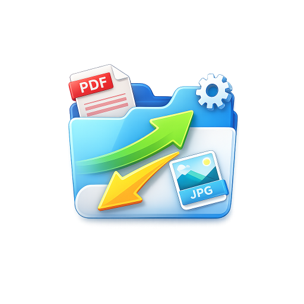
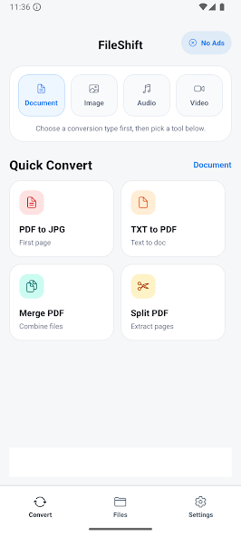
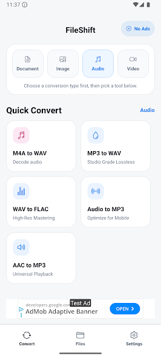
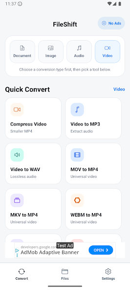

Offline by design
Convert files without waiting for uploads, server queues, or a stable connection.

FileShift Google PlayPrivate. Fast. On-device.
FileShift turns your phone into a practical offline toolbox for PDFs, images, audio, and video. Convert, trim, merge, extract, preview, and keep everything on your device.

Real app screens
A quick look at the main tabs inside FileShift: documents, audio, and video tools, all presented in a simple on-device workflow.


Why FileShift
Open the app, pick a task, finish it, and move on. FileShift is designed for the kind of work people actually do on a phone: compress a clip, merge a PDF, turn photos into a document, or extract audio from a video.
Convert files without waiting for uploads, server queues, or a stable connection.
Your source files and results stay on the device instead of being routed through the cloud.
Preview outputs, rename finished files, and jump back to recent conversions when needed.
Core features
Convert and reorganize PDFs with practical actions like merging, splitting, image export, and text-to-PDF creation.
Clean up format issues and make files easier to share, upload, or include in documents.
Prepare voice notes, music, and extracted tracks for editing, sharing, or playback in the format you need.
Trim, compress, convert, mute, or extract audio from video directly on your phone.
How it works
Start with the exact conversion or media action you need instead of digging through complex menus.
Pick a local file from your device, preview it when useful, and run the task directly on the phone.
Review the finished output, rename it if needed, and keep it in local storage for immediate use.
Privacy and control
FileShift is positioned around an on-device workflow. That matters when you are handling invoices, private photos, voice notes, work documents, or large clips on the move.
FAQ
Yes. The app is presented as an offline file converter for Android and is built around local processing on the device.
The app supports documents, images, audio, and video, including tasks like PDF merge and split, HEIC to JPG, audio conversion, video trimming, and video-to-audio extraction.
Anyone who needs lightweight file conversion on Android without opening a laptop or using a cloud service.
Ready to try it?
Built for Android users who want quick results, clear workflows, and more control over their files.